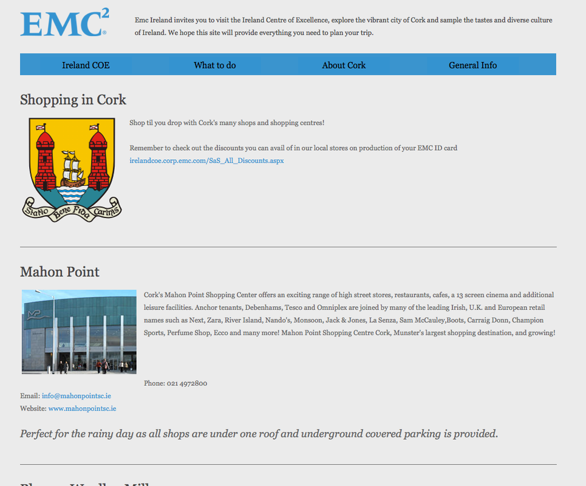
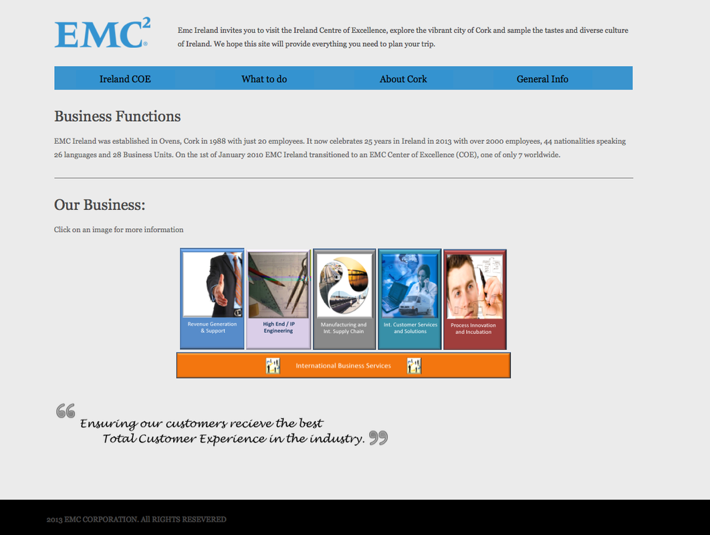
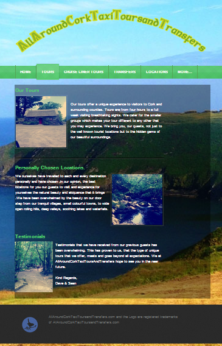
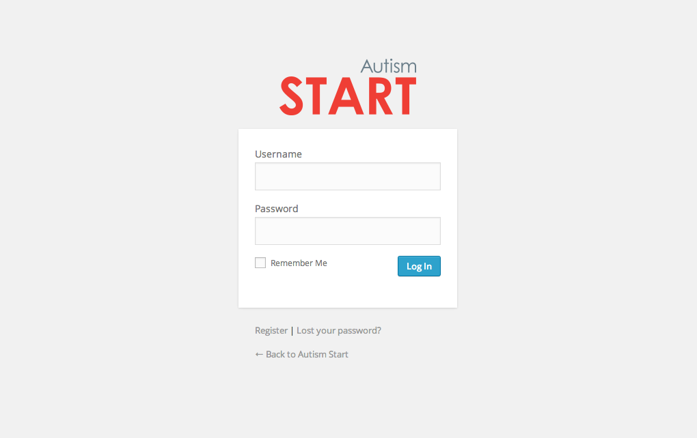
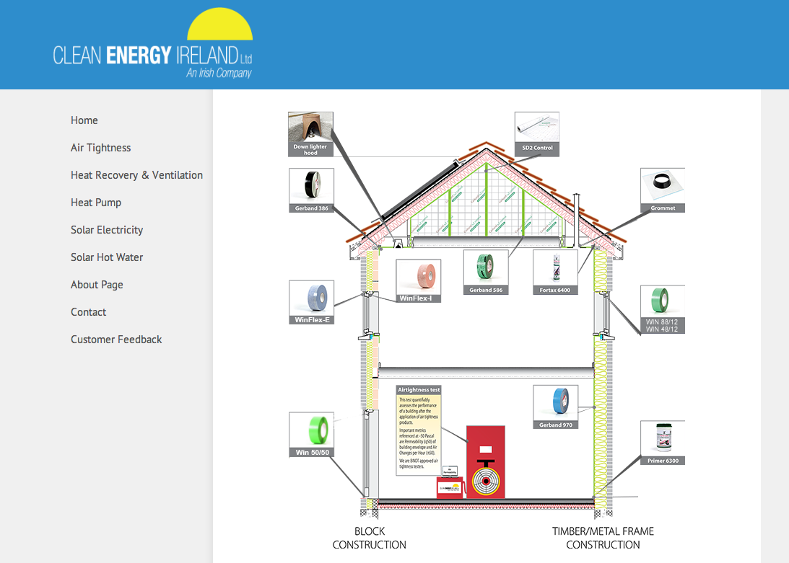
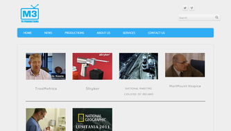
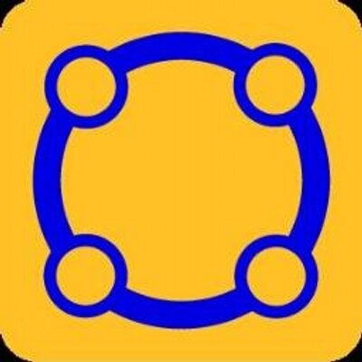

- 
EMC/Dell Interal website
EMC Corporation (stylized as EMC²) is an American multinational corporation headquartered in Hopkinton, Massachusetts, United States.EMC offers data storage, information security, virtualization, analytics, cloud computing and other products and services that enable businesses to store, manage, protect, and analyze data. EMC's target markets include large companies and small- and medium-sized businesses across various vertical markets.
- 
EMC/Dell Training website
EMC Corporation (stylized as EMC²) is an American multinational corporation headquartered in Hopkinton, Massachusetts, United States.EMC offers data storage, information security, virtualization, analytics, cloud computing and other products and services that enable businesses to store, manage, protect, and analyze data. EMC's target markets include large companies and small- and medium-sized businesses across various vertical markets.
- 
AllAroundCorkTaxiToursandTransfers.com
AllAroundCorkTaxiToursandTransfers.com has been created by local Cork drivers with a wealth of knowledge of the County of Cork and surrounding counties such as Waterford, Kerry, and Tipperary. We ourselves have personally visited each location on our tours so that we can offer the best locations for you that larger group tours do not offer. Our aim is to bring our guests to our beautiful county, not just to the most well known tourist areas such as Blarney Castle, Kinsale, Cashel and the Ring of Kerry but also to the hidden gems that most visitors never get to see or hear about. Our tours are set up in a way that our guests have the opportunity not just to select organized tours created by AllAroundCorkTaxiToursandTransfers.com, but guests can also select locations of their choice and create their own tour.
- 
Autism Start
Autism Start provides practical expert advice to parents and practitioners supporting children and teenagers with autism. Our mission is to provide easy to follow step-by-step guides for teaching communication skills, social skills, academic learning and independent living skills. Our team is made up of board certified behaviour analysts, special education teachers and a senior clinical psychologist. The guides and advice on this site are the result of years and years of experience. The team has worked directly with over 500 children and teenagers with autism. Our advice is based on the all the things these amazing children taught us over the years.
- 
Clean Energy Ireland
Clean Energy Ireland is a supplier of Solar Panels for heating to both business and residential customers. Clean Energy Ireland holds the NSAI Agrément certificate for its solar panels.

Declan Sinnott
Declan Sinnott is an Irish musician and record producer. Originally from Wexford town, where his father was an optician and jeweller on Main Street, he came to Dublin in the late 1960s. Around 1970 he was a member of the poetry-and-music group Tara Telephone, in which he composed, sang, and played guitar. He and poet/percussionist Eamon Carr left Tara Telephone to form the Celtic Rock band Horslips, which Sinnott left in 1972, before the recording of Horslips' first album in 1973
- 
M3tv.ie
Based in Cork, we are one of Ireland’s leading production companies. We work with the best talent both in front of and behind the camera to produce high quality content for both Irish and international broadcasters. Specializing in factual and one-off documentaries, our content is diverse. However, at the core of everything we produce is an engaging story that always connects with its audience. Over the past three years we are proud to have created some very powerful moments in Irish Television. Our productions to date include, From Here to Maternity for RTE, Marymount Hospice for TV3 and Dark Secrets of the Lusitania for National Geographic.
- 
LearnLode.ie
Sadly I cannot really talk about my work with learn lode but